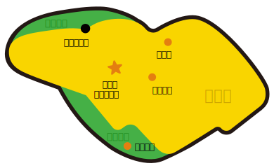

スクーリングが鷹の台キャンパスだと授業の内容は楽しくても通いづらくて気が重い人も多いと思います。
ですが、交通手段を変えてみると訪れた事のない駅、道に触れて新鮮な気持ちになったので他の方にも味わってほしいと思いました。
私どの方にも行ってほしいですが、私のように30歳前後で都内で一人暮らしをしていて日々仕事と通信課題に追われて出かける機会や友人に会う機会が減っている方には知ってほしいです。
そしていつか振り返った時に、校舎だけでなく、鷹の台エリアも思い出して、あの頃ムサビ通信に通っていたな、楽しかった、仕事との両立きついけど頑張ってたなと思い返してもらえたら嬉しいです。